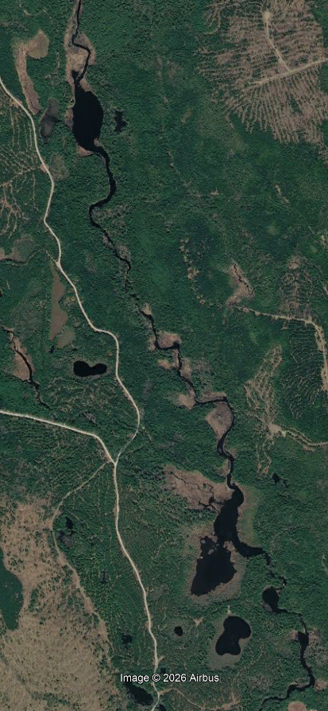

Figure LP.1 - Long Profile: from the outlet of the Oxbow to Beddington Lake delta.

Figure LP.2 - Main channel lakes located between points C and D in Figure LP.1.

There are several small lakes between The Oxbow and the S-Bend areas of interest. These small lakes act
as effective sediment traps.